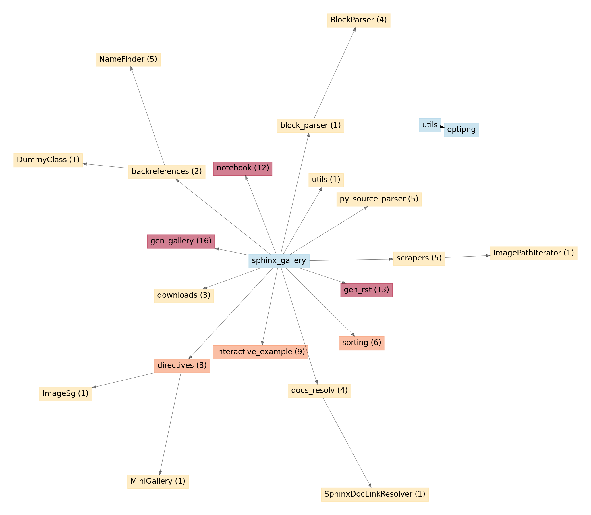

Unused API Entries#
sphinx_gallery.block_parser.BlockParser.extract_file_config()sphinx_gallery.block_parser.BlockParser.remove_config_comments()sphinx_gallery.block_parser.BlockParser.remove_ignore_blocks()sphinx_gallery.block_parser.BlockParser.split_code_and_text_blocks()sphinx_gallery.gen_gallery.update_gallery_conf_builder_inited()sphinx_gallery.interactive_example.create_jupyterlite_contents()sphinx_gallery.interactive_example.post_configure_jupyterlite_sphinx()sphinx_gallery.interactive_example.pre_configure_jupyterlite_sphinx()

API entries used: 1.98% (2/101)